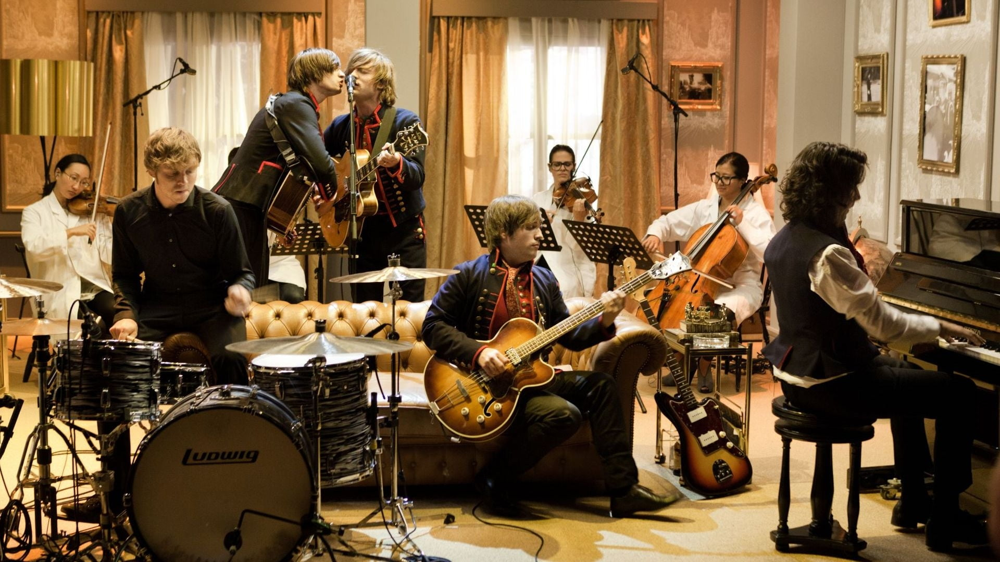

Master Chef
MasterChef is an American competitive cooking reality TV show based on the original British series of the same name, open to amateur and home chefs. Produced by Shine America and One Potato Two Potato, it debuted on July 27, 2010 on the Fox network, following the professional cooking competition series, Hell's Kitchen. For the first 5 seasons, the series starred celebrity chefs Gordon Ramsay (the co-creator of the series and Hell's Kitchen), Graham Elliot and restaurateur Joe Bastianich. From Seasons 6–8, pastry chef Christina Tosi temporarily replaced Bastianich.

Master Chef Junior
MasterChef Junior is a family friendly cooking competition featuring contestants age 8 to 13. Contestants are under stress and pressure, asked to cook under time constraints for judges. One is eliminated on each show; viewers will watch kids react and even cry. The young cooks are working with knives and hot food, so there's a possibility for injury. Drama is amped up with music, camera cuts, and strategic pauses. For the most part, judges are gentle with criticism, always praising contestants' efforts and talents while pointing out deficits in their dishes. Contestants likewise treat judges with deference and respect.
Kpop
One of the things K Pop does so well is creative use of costumes and color in music videos. Hundreds of years ago, when North America was barely being industrialized, Asia already had a burgeoning art and graphics scene. So, it should come as no surprise that Asian pop culture in general, including music videos, is often heavily refined and well thought. Use of effects, make up, outfits, and everything else, are always in service to a greater theme and vision.

The Voice
The Voice is an American singing competition television series broadcast on NBC. It premiered during the spring television cycle on April 26, 2011, and expanded into the fall cycle with the premiere of the third season on September 10, 2012. Based on the original The Voice of Holland, and part of The Voice franchise it has aired seventeen seasons and aims to find currently unsigned singing talent (solo or duets, professional and amateur) contested by aspiring singers, age 13 or over, drawn from public auditions.

Music
“Music for the sake of music." Any responsible music educator will emphatically echo this important mantra; it is the keystone theme that serves as the foundation of music teaching, music learning, and music performance. There is no substitute or replacement for music making as it relates to the positive growth and development of the human mind, body, and spirit. Participation in band avails the musician to the infinite journey of creative expression connecting to a language that is understood, communicated, and appreciated by all of mankind around the globe. More importantly, MUSIC IS A PLACE FOR EVERYONE.